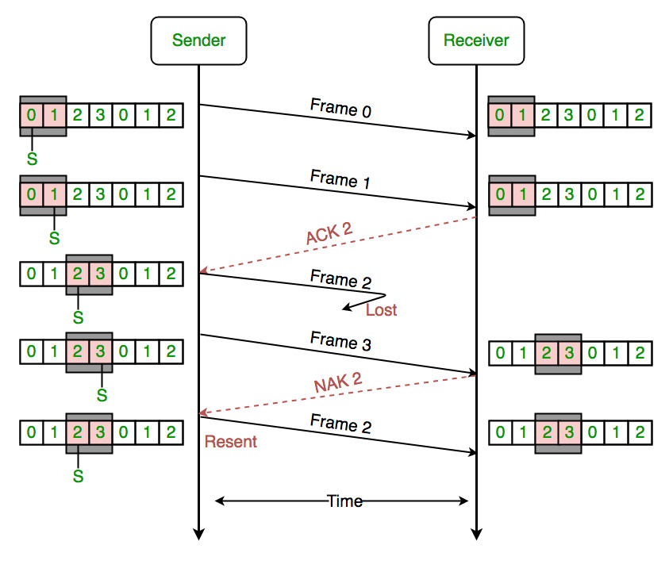

Reliable File Transfer Protocol Built On (Unreliable) UDP
Built a reliable file transfer protocol on top of UDP using a Selective Reject sliding window. The project includes a client and forked server that handle packet loss, reordering, and corruption via checksums, cumulative ACKs (RR), targeted NACKs (SREJ), and an EOF/ACK teardown.

Role / Tools / Timeline
- Role: Network protocol developer
- Tools: C, sockets, Wireshark debugging
- Timeline: Multi-week networking lab
What I Built
- Implemented Selective Reject sliding window with cumulative ACKs and targeted NACKs
- Added checksum verification, retransmission, and EOF/ACK teardown handling
- Tested against packet loss, reordering, and corruption scenarios
Results
- Achieved reliable transfers over intentionally lossy UDP setups